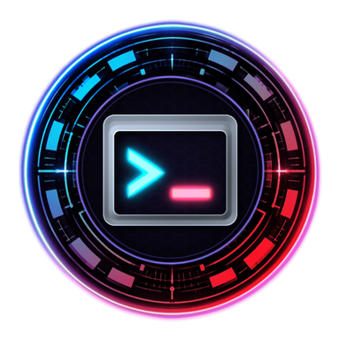
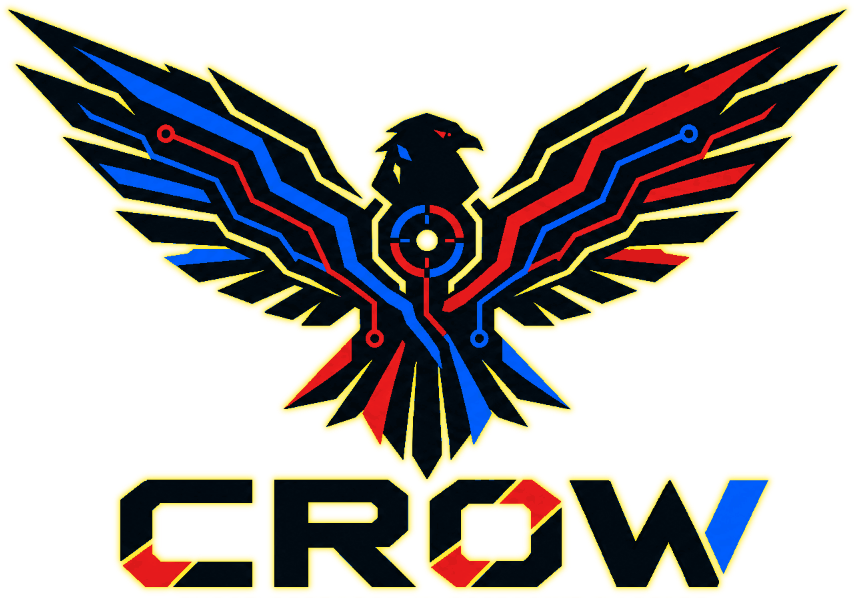

Analyze • Detect • Investigate • Protect
Unified Windows endpoint telemetry, process-service-driver-socket correlation, cryptographic Authenticode & VirusTotal validation, Super-Timeline reconstruction, and version-aware PowerShell automation.
System Overview, Hardware Health & Active Incident Triage
Real-time hardware configuration, resource telemetry, platform security posture, and evidence-backed findings for Display/GPU & Shell/Application stability incidents.
PERF-02)
Auto-Updating (3s Interval)
Powered by Native PowerShell WMI/CIM • Zero External Dependencies
System Resource Utilization & Memory Pools Live Telemetry
Top Memory & GPU Consuming Processes Working Set & VRAM
Security, Integrity & Event Severity Distribution Correlated Counts
Hardware, Firmware, GPU & Platform Security Inventory (`HW-01`)
Unified Process, Service, Binary, Registry & Network Correlation (`CORR-01`)
Every running process is normalized with a creation-time-aware identifier and cross-referenced against its Parent Process (PPID), SHA-256 hash, Authenticode signature, hosted Windows Services, Registry persistence keys, active TCP/UDP sockets, and deterministic Threat/Risk assessments.
Network Forensics, Socket Correlation & External IP Intelligence (`NET-01` / `NET-02`)
Active TCP/UDP connections, listening ports, owning processes and services, verified connection durations (reporting Unknown when only a point-in-time snapshot is available), and public IP WHOIS/RDAP, ASN, Organization, Country, and Reverse DNS enrichment.
TCP Connection States & Exposure Summary
External Connections by Country / ASN Organization
Multi-Channel Windows Event Log Analysis, Incident Clustering & Super-Timeline (`EVT-01` / `INC-01` / `UTIL-04`)
Correlated event records across System, Application, Setup, Windows Defender, PowerShell Operational, RestartManager, and Windows Error Reporting channels, plus a unified chronological Super-Timeline merging Process Starts, Network Sockets, Crash Dumps, Scheduled Tasks, and PowerShell ScriptBlocks.
Event Log Channel Collection Status
Top Repeated Event Clusters (`EVT-01`)
Windows System Binary Integrity & Microsoft Signature Validation (`INT-01`)
Validates installed Windows system binaries in System32, kernel drivers, and active process executables using SHA-256 hashing, Authenticode & Windows Catalog signature chain verification, Microsoft publisher validation, and version-matched local baseline comparisons.
On-Demand Binary, Service, Driver & DLL VirusTotal Inspector
Enter any local .exe, .dll, .sys driver path, service command string, or 64-character SHA-256 hash to compute cryptographic hashes (SHA-256/SHA-1/MD5), verify Authenticode certificates, and check multi-engine reputation on VirusTotal & Hybrid-Analysis.
Malware, Persistence, Scheduled Tasks, BITS, PowerShell 4104 & Rootkit Heuristics (`MAL-01` / `MAL-02` / `REG-01`)
Evidence-driven security findings with distinct Threat Assessment (likelihood of malicious/unauthorized behavior) and Risk Assessment (impact on confidentiality, integrity, availability, or stability), plus deep Scheduled Task, BITS Queue, and PowerShell ScriptBlock 4104 transcripts.
Full System Crash Root-Cause Engine, BugCheck Decoder & Memory Dump Forensics (`MEM-01` / `MEM-02`)
Automated Windows Kernel BugCheck decoder (Kernel-Power Event 41 XML, 64-bit Parameters 1–4, volmgr Event 161, and 30-minute Pre-Crash driver/update correlation that works even without Administrator rights), plus physical MEMORY.DMP, Minidump, LiveKernelReports, and User-Mode CrashDump inventory.
On-Demand Process Memory MiniDump Acquisition (`MEM-02`)
Captures a diagnostic user-mode minidump (via native dbghelp.dll MiniDumpWriteDump) into Evidence\MemoryDumps\ and logs a SHA-256 chain-of-custody record. Never uploaded externally.

Centralized PowerShell Script Execution Center (`Config\script_registry.json`)
Execute any approved diagnostic, forensic, correlation, integrity, or export script directly from the browser. Arbitrary shell commands are strictly blocked; all script executions are parameter-validated, concurrency-locked, and logged to SQLite & Logs\script_execution.log.
Live Script Execution Output & Structured JSON Inspector
Select any script above and click "Execute Script" to view its live structured output here.
Investigation Reports, Portable Single-File Bundle & Obsidian Vault (`UTIL-01` / `UTIL-05`)
Structured diagnostic report for Display/GPU & Shell/Application stability incidents, single-file portable HTML executive report bundler, optional browser GPU/DOM telemetry snippet, and live Obsidian Vault Markdown viewer.
Single-File Portable Executive HTML Report Bundler
Bundles the entire HTML layout, Light/Dark CSS stylesheet, JavaScript table/chart engine, Obsidian Vault notes, and current forensic telemetry snapshot into a single .html file (saved in Reports\Executive\ and downloaded to your browser) with zero external file dependencies.
Optional Browser GPU, WebSocket & DOM Diagnostic Observer (`UTIL-03`)
Read-only JavaScript snippet generated at Data\Investigations\browser_diagnostics_snippet.js. Paste into Chrome/Edge DevTools Console on any web application tab to distinguish Windows GPU TDR resets (webglcontextlost) from WebSocket disconnects or DOM full-page rerenders.
Obsidian Vault Knowledge Repository (`ObsidianVault\*`)
Controlled Remediation & Preserved System Optimization Audit (`REM-01`)
Investigation and remediation are strictly separated. All actions below default to Read-Only Dry-Run Preview and require explicit user authorization before modifying any registry key or service state.
Preserved Baseline Audit: Logon Lag, Shutdown Delay (Event 7043) & Resource Bloat
Original workstation audit findings and one-click PowerShell optimization steps preserved from diagnostics_data.json.
About CROW INNOVATIONS — Cyber Research in Offensive Warfare
Adversary simulation, exploitation research, cyber forensics, and applied artificial intelligence supporting ethical Red Teams, Blue Teams, and high-consequence government & commercial missions.

Who We Are: Operational Experience & Applied Security
CROW stands for Cyber Research in Offensive Warfare. Our purpose is to understand how complex digital systems can be compromised—through adversary simulation, exploitation research, and applied artificial intelligence—and use that empirical knowledge to harden security postures, develop offensive and defensive tooling, and support high-consequence government and commercial missions.
Our work is grounded in over 16 years of operational experience in offensive cyber operations, exploitation analysis, penetration testing, malware analysis, and cyber forensics. Whether conducting a technical assessment, engineering a custom research utility, or integrating AI into an organization’s security workflow, our approach remains the same: investigate deeply, rigorously validate assumptions, and deliver actionable intelligence.
Years Offensive Cyber & Forensics Experience
Operational background spanning offensive cyber operations, vulnerability discovery, exploit engineering, malware reverse engineering, and endpoint DFIR.
Applied AI & Sovereign Local Model Workflows
Practical integration of private, local, and sovereign AI workflows with strict human oversight, access controls, and adversarial boundary testing.
Custom Tools & Mission Automation
Bespoke research utilities, zero-dependency forensic suites, and technical mission support built from real-world offensive and defensive requirements.
Cyber Defense, Malware Forensics & Architecture Hardening
Supporting SOC analysts, DFIR investigators, and system administrators with empirical telemetry.
CROW Innovations equips Blue Teams and enterprise defenders with both high-assurance consulting services and standalone endpoint forensics:
- Compliance Auditing & Assessment: Technical gap analysis and readiness verification across NIST SP 800, CMMC, FedRAMP, FISMA, PCI DSS, HIPAA, SOC 2, and ISO/IEC 27001.
- Malware Analysis & Cyber Forensics: Static/dynamic reverse engineering, C2 protocol extraction, memory triage, and actionable YARA/Sigma detection engineering.
- Cryptographic Binary Integrity (
INT-01/INT-03): Verifies SHA-256 hashes, Microsoft Authenticode chains, Windows Catalog signatures, and privacy-safe VirusTotal & Hybrid-Analysis reputation. - Unified Super-Timeline & Controlled Remediation (
UTIL-04/REM-01): Correlates multi-channel Event Logs, process starts, sockets, and crash dumps while keeping remediation strictly dry-run previewed.
Adversary Simulation, Exploitation & Offensive AI Research
Realistic offensive operations and vulnerability research to expose attack paths before adversaries do.
Ethical Red Teams, Purple Teams, and Vulnerability Researchers rely on CROW Innovations to validate detection coverage and test complex attack surfaces:
- Red Teaming & Penetration Testing: Authorized adversary simulation across enterprise networks, web/cloud applications, and Active Directory / identity infrastructure.
- Vulnerability & Exploitation Research: Zero-day discovery, memory corruption analysis, fuzzing harness engineering, and reproducible proof-of-concept validation.
- Adversarial AI & Agent Boundary Testing: Researching LLM jailbreaks, prompt-injection attack graphs, and autonomous agent tool-call boundary escapes.
- Endpoint Persistence & Tradecraft Audit (
MAL-01/REG-01/CORR-01): Inspects Scheduled Tasks, BITS queues, PowerShell Event 4104 ScriptBlocks, IFEO debuggers, and socket-to-PID mappings.
Focused Technical Services & Active Research Domains
Core capabilities delivered by CROW Innovations across government, defense, and commercial engagements.
1. Cybersecurity Compliance & Auditing
Comprehensive security assessments and remediation roadmaps aligned with PCI DSS, HIPAA, NIST SP 800-53 / 800-171, CMMC, FedRAMP, FISMA, SOC 2, and ISO/IEC 27001.
2. AI Integration & Private AI Engineering
Designing local and sovereign AI deployments that keep sensitive data on-premises while enforcing strict human oversight, RBAC, and prompt/tool-call security boundaries.
3. Red Teaming & Penetration Testing
Objective-based adversary emulation testing real-world detection, response, lateral movement resistance, and identity security controls across complex environments.
4. Vulnerability & Exploitation Research
Deep binary auditing, protocol fuzzing, crash root-cause analysis, and exploitability assessment for embedded, kernel, and enterprise software stacks.
5. Malware Analysis & Cyber Forensics
Rapid incident triage, obfuscated payload unpacking, host memory & dump forensics, and automated malware triage pipelines.
6. Community Tools & Mission Support
Open-access cyber utilities—including Live Threat Telemetry Maps, Client Footprint & Web Recon, Identity Attribution, and this Windows Forensics Suite.
CROW Community Tools Standard • Standalone Zero-Dependency Design
Every CROW tool—both on crowinnovations.com/tools.html and in this standalone Windows Forensics Workstation—is built on four core principles: Zero Server Logging (runs locally/client-side without harvesting telemetry), Operational Fidelity (engineered from real offensive and forensic tradecraft), Actionable Data, and Zero External Bloat (real-time CPU, RAM, GPU, and VRAM telemetry streams natively via PowerShell PERF-02 without requiring external servers or databases).
Official Portal & Tools: https://crowinnovations.com/tools.html • General & Scoping Inquiries: contact@crowinnovations.com • Security Reporting: security@crowinnovations.com